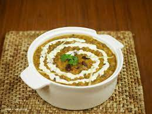

Daal Makhni

Pakistani daal makhni is a hearty and flavorful lentil dish that is a
staple of Pakistani cuisine. It is made with yellow lentils that are
cooked until soft and then simmered with a mixture of aromatic spices,
garlic and ginger paste, and butter. The addition of milk gives the daal a
rich and creamy texture, making it a comforting and satisfying meal. This
dish is often served with rice or roti, and is a popular choice for
special occasions and gatherings. Whether you are a fan of Pakistani food
or just looking for a delicious and nourishing lentil recipe, Pakistani
daal makhni is sure to become a new favorite.
Ingredients:
- 1 cup yellow lentils (daal)
- 1 medium onion, finely chopped
- 1 tsp garlic paste
- 1 tsp ginger paste
- 1 tsp cumin seeds
- 1 tsp coriander seeds
- 1 tsp garam masala
- 1 tsp red chili powder
- 1 tsp salt
- 2 tbsp butter
- 1 cup water
- 1 cup milk
Direction:
- Rinse the lentils and soak them in water for 1 hour.
-
Drain the lentils and add them to a pressure cooker with the water. Cook
for 3-4 whistles or until the lentils are soft and mushy.
-
Heat the butter in a pan over medium heat. Add the cumin seeds and
coriander seeds and fry for a few seconds until fragrant.
-
Add the onions and fry until they are golden brown. Add the garlic and
ginger paste and fry for another minute.
-
Add the cooked lentils, garam masala, red chili powder, and salt to the
pan and mix well. Add the milk and bring to a boil.
-
Reduce the heat to low and simmer for 10-15 minutes, or until the daal
is thick and creamy. Serve hot with rice or roti.